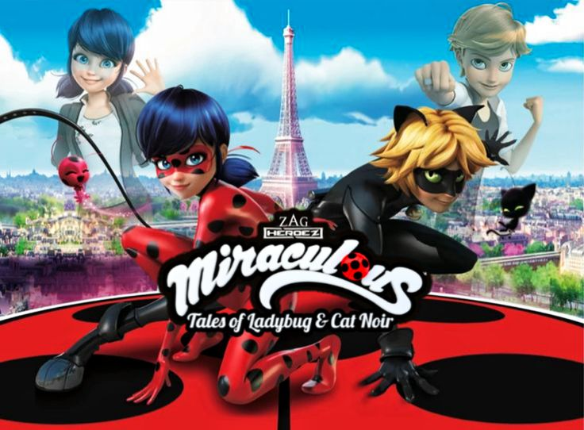
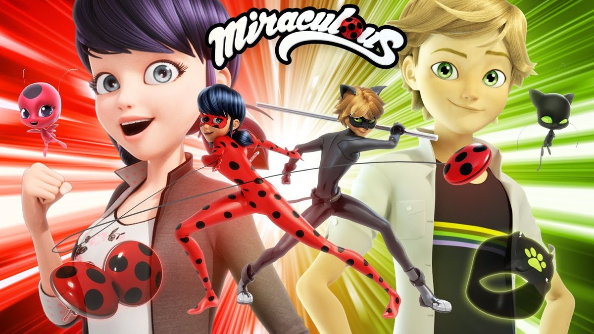
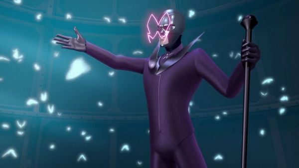
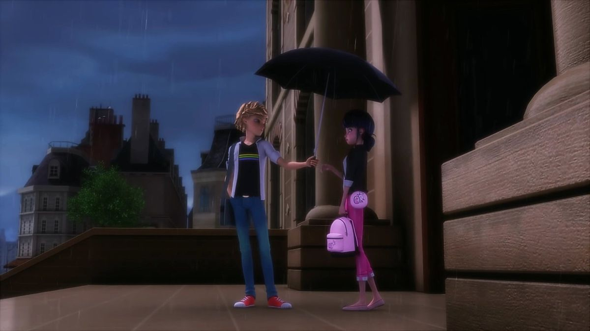
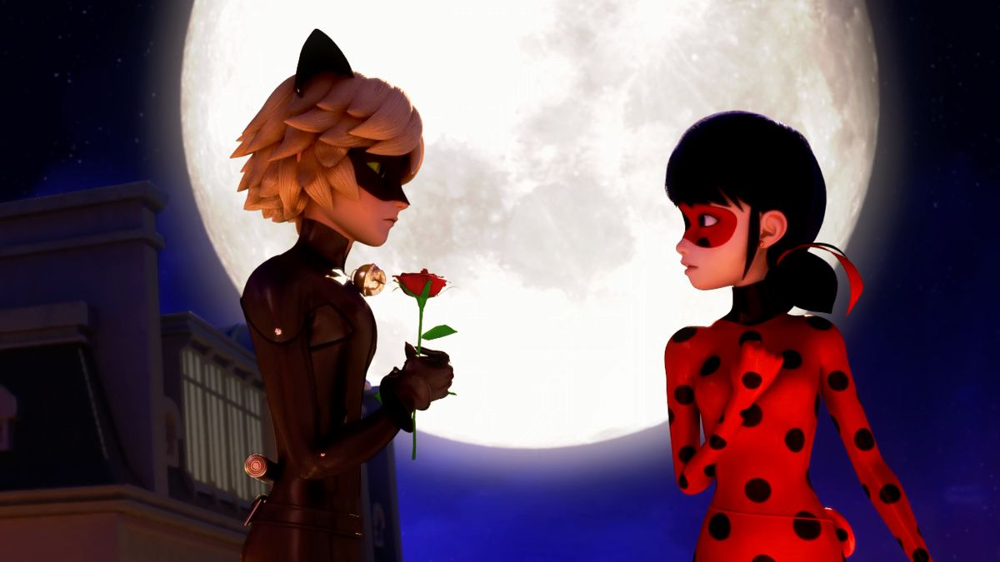

Información general
| Dato | Información |
|---|---|
| Nombre original | Miraculous: Tales of Ladybug & Cat Noir |
| Nombre en español | Miraculous: Las Aventuras de Ladybug / Prodigiosa: Las Aventuras de Ladybug |
| Creador | Thomas Astruc |
| Género | Acción, comedia, romance, superhéroes, magical girl |
| Países de producción | Francia, Corea del Sur y Japón |
| Productoras | Thomas AstrucZAG Entertainment, Toei Animation, Method Animation, SAMG Animation |
| Tipo de animación | CGI / animación 3D |
| Estreno | 2015 en Francia |
| Temporadas | 5 estrenadas oficialmente y más en producción |
| Episodios | Más de 150 episodios y especiales |
| Duración | 20–22 minutos |
| Ambientación | París |
¡Bienvenidos al mundo de Miraculous!

En el corazón de la moderna ciudad de París, dos adolescentes llevan una vida aparentemente normal: Marinette Dupain-Cheng y Adrien Agreste. Sin embargo, ambos ocultan un gran secreto: cuando el mal amenaza la ciudad, se transforman en los valientes superhéroes Ladybug y Cat Noir, protectores de París. Aunque trabajan juntos para enfrentar a los villanos, ninguno conoce la verdadera identidad del otro. Esta doble vida llena de acción, misterio y emoción es lo que hace única a su historia.
Los héroes de París
Marinette, como Ladybug, posee el poder de la creación gracias a su Miraculous, unos pendientes mágicos conectados al kwami Tikki. Por otro lado, Adrien se convierte en Cat Noir con el poder de la destrucción, usando su anillo vinculado al kwami Plagg. Juntos forman un equipo equilibrado que debe proteger la ciudad de los akumas, criaturas que transforman a las personas en villanos cuando sus emociones negativas son manipuladas.

Una ciudad bajo amenaza

El principal enemigo de Ladybug y Cat Noir utiliza el poder de las mariposas oscuras (akumas) para convertir a ciudadanos comunes en supervillanos. Su objetivo es robar los Miraculous y obtener un poder capaz de cumplir cualquier deseo. A lo largo de las distintas temporadas, los héroes han enfrentado enemigos cada vez más fuertes, mientras descubren más secretos sobre los Miraculous y el mundo mágico que los rodea.
Más que una historia de superhéroes

Miraculous no solo trata de acción y batallas, también muestra la vida cotidiana de dos adolescentes que lidian con la escuela, la amistad, la familia y los sentimientos. Uno de los temas más importantes de la serie es el amor no correspondido entre los protagonistas, ya que Marinette está enamorada de Adrien, mientras que Cat Noir está enamorado de Ladybug, sin saber que son las mismas personas en su vida diaria.

El encanto de París
La serie está ambientada en una versión animada y vibrante de París, donde cada rincón de la ciudad se convierte en escenario de batallas, aventuras y momentos emocionales. Este entorno le da a la historia un estilo único que mezcla romance, acción y magia.